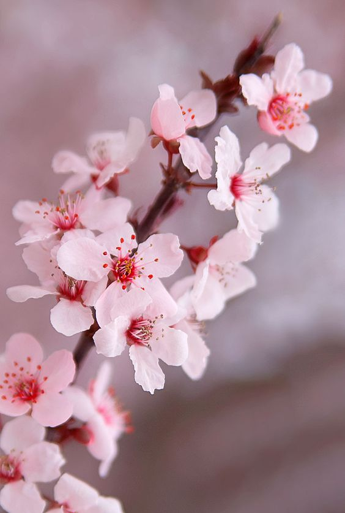
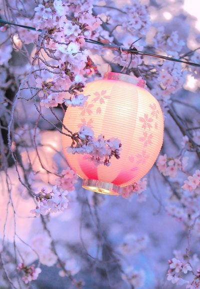

關於我們
-

櫻花手帳
隨著今年寒流頻頻來襲，各地櫻花已經等不及陸續綻放啦！想賞櫻的朋友不要錯過！本站整理出絕佳的賞櫻花景點，趕緊看看有哪些打卡必備的好去處吧！
-
櫻花季
一抹粉嫩渲染全台，又到追櫻的季節。春天櫻景唯美浪漫，全台瘋狂一起賞櫻花，沒時間出國飛日本賞櫻花，完全沒關係，寶島台灣各縣也都有亮眼的賞櫻去處！
-

賞櫻
台灣日治時期許多地區曾廣植櫻花，而在近年又因為受到日本觀光旅遊的影響，賞櫻風氣極盛，主要賞櫻地點大多會舉辦固定期間的櫻花季活動，且由於氣候影響，賞櫻地點大多位於山區，常會採取交通管制或人數管制等方式。近年由於賞櫻熱潮，也引發各地大量栽種櫻花的情形。